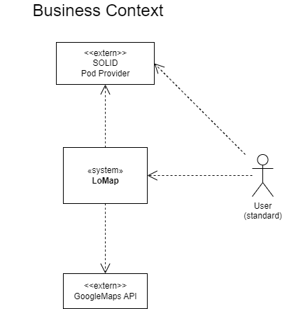
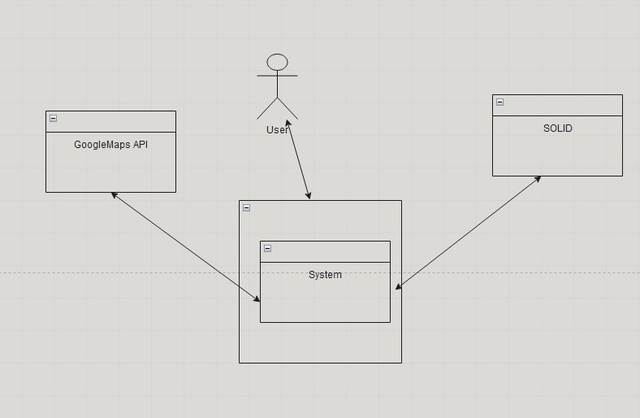
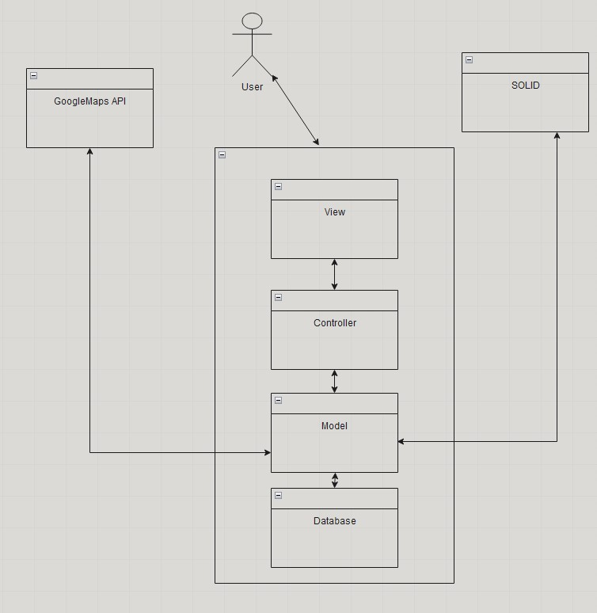
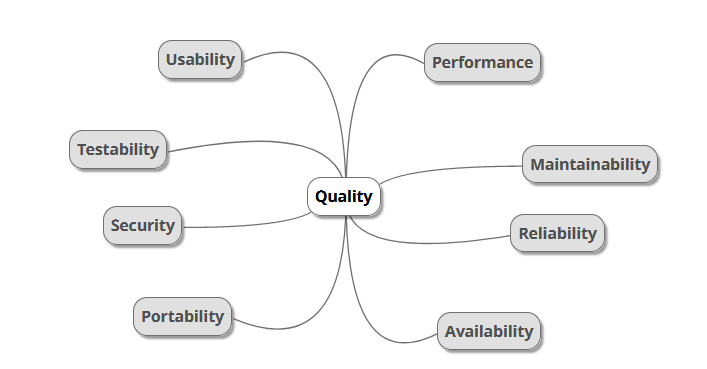

1. Introduction and Goals
The Council of Brussels has hired the company HappySw, which consists in software architecture students from Oviedo, to develop an application called LoMap. With LoMap you can access to a map and add markers, routes and share it with your friends. Our goal is to develop an application that fullfills the requirements and good quality standards, following SOLID principles ensuring privacy and availability of the data.
1.1. Requirements Overview
LoMap is a desktop application which allows users to have a customized map about places and local businesses in their city, although it can be scalable to any place in the world. These locations can have images, reviews, scores… and can be categorized into shops, bars or museums among others.
All information is stored in a pod under the full control of the user, as LoMap is developed following the guidelines of the Solid Project. However, this is not an impediment for the users to share their places with friends, since LoMap implements the friend system of Solid and lets the user decide which information is going to be shared and which is going to be private.
1.1.1. Functional requirements
-
Manage their locations: add, delete and edit.
-
Add different categories for each location.
-
See the locations in the map in form of markers.
-
Interact with the locations adding photos, reviews or ratings.
-
Manage a list of friends.
-
Manage the information that is shared with his friends.
-
Keep track of their progress in the application in a gamified way.
-
Filter locations based on categories and friends.
-
Store the information about each user’s places in their Solid pods, not centralized.
-
Allow users to see their own and their friends' markers.
-
Offer the user an interactive guide to provide guidance and training on the app functionalities.
1.2. Quality Goals
| Goal | Description |
|---|---|
Security |
A pod can only be accessed by its legitimate owner. User can modify their access data and manage which information is visible to other users. |
Performance |
The application is be able to give reasonable response times when users are interacting with it. |
Availability |
The personal data from the pods can be accessed at any time. |
Usability |
The application is easy to use. |
Portability |
The application works regarding the device, since it is developed as a web application. |
Testability |
Tests are developed for the application in order to check it’s correct behavior. |
1.3. Stakeholders
| Role/Name | Description | Expectations |
|---|---|---|
Council of Brussels |
The sponsor of the application |
An application that allows users to have a better experience while visiting Brussels. |
HappySw |
The company in charge of the application development |
A good application that fullfills the requirements expected by the sponsor. |
Developers |
People that are implementing and mantaining the app |
A good documentation and well commented code, avoiding repetitions and with a good use of patterns, in order to be easy to modify or extend. |
Professors |
In charge of the subject. |
An application fullfilling the expectations, that can be qualified. They can also give feedback and help to the developers. |
Users |
Interact with the application |
A good, easy to use application, that responds well to their inputs and adds value to them, while keeping their data secure. |
2. Architecture Constraints
When designing the LoMap application, there are several constraints that must be taken into consideration, as they will have a significant impact on the overall design of the application and the architectural decisions. These constraints must be considered in order to ensure that the final product meets the needs and expectations of the users and stakeholders. The following table summarizes these constraints and provides a brief explanation for each one.
| Constraint | Explanation |
|---|---|
Privacy (use of SOLID) |
The privacy of the users is a key concern, for that, the application is decentralized and the information stored in each user’s pod is kept confidential. |
Version control and monitoring (GitHub) |
For the LoMap application, GitHub is a useful tool for version control and collaboration among the team members working on the project. It allows easier coordination and organization of the development process, as well as keeping track of changes and contributions made by each team member. |
User Experience |
The design of the application must make its use friendly and easy. |
Deployment |
The application should be deployable to different cities. |
Test coverage |
Code must meet a good test quality and coverage to ensure the expected outcome. |
2.1. Recommended technologies to take into account
There some technologies mentioned to provide readers with a clear understanding of this application and how it works. These are not considered constraints since they were not imposed, but given the strong impact they have, the team considered that they should be presented in this section.
| Technology | Explanation |
|---|---|
Google Maps API |
Collection of APIs that allows developers to integrate Google Maps into their applications. Also provides developers with access to a range of features and functionality related to maps and location-based services. |
NodeJS |
JavaScript runtime environment that allows developers to run JavaScript code outside of a web browser. This allows to use TypeScript language from the server side. |
React |
JavaScript library that allows the creation of web application UI in an easy way. The user interface of our application was built using react componentes and libraries. |
Inrupt |
Platform (and SOLID pod provider) that allows a secure and decentralized way to store and share data. Also offers a set of libraries to ease the use and management of pods. |
3. System Scope and Context
3.1. Business Context
In our business context, the user will input data into the application, which communicates with the user’s SOLID pod to retrieve and add data.
All this information among with the use of the Google Maps API, will be processed and an output will be recieved by the user.
The pod will store the user’s personal data, and the locations they mark on the map.
The Google Maps API will provide our application maps, and more functionality like marking places.

3.2. Technical Context
| Technical Interfaces | Description |
|---|---|
SOLID |
Specification that lets people store their data securely in decentralized data stores called pods. These pods are fully under its owner’s (the user) control. To use SOLID, a pod provider and a "web ID" are needed. Pods are structures that store the user’s data, and the ID identifies the user and allows them to access their pods, and also connect with other SOLID users. |
ReactJS |
JavaScript open source library that will make it easier to create user interfaces. It shines in applications whose data is always changing. React is the View in the context of the MVC (Model-View-Controller) pattern. |
Docker |
Platform used to automate the deployment of applications in lightweight containers so that applications can work efficiently in different environments. Containers are isolated from one another and bundle their own software, libraries and configuration files; they can communicate with each other through well-defined channels. |
4. Solution Strategy
In this section strategies decided by the team will be stated.
4.1. Technologies
-
TypeScript. This language, that comes from JavaScript, provides a powerful language to program the client part of our application. It provides a good documentation and some tools that JavaScript does not provide that makes it more powerfull.
-
Arc42. This template allows our documentation to be organized, and well specified, and also gives us a path to follow and simplify the process.
-
Google Maps API. This API allows us to build the map which will be needed to the development of the application. This api has been chosen because it’s reliable and has been used by some of our team members before. Achieves usability, deployment and good user experience.
-
Solid. In order to store each user’s pod and keep the data decentralized. Achieves security and privacy.
-
React. A JavaScript library for user interfaces. It is widely used in the industry because it helps building rich user interfaces in a simple way, and allows flexibility and is easy to mantain.
-
NodeJS. Another JavaScript library for the server layer that provides the tools to implement the application. It also supports different types of databases and has a large and active community, that might comme in handy when we have questions.
-
Docker. In order to deploy the application. It containerizes it for automated deployment. Achieves portability.
-
Chakra UI. Component and modular library to create HTML customized and themeable components. Achieves usability.
-
Inrupt Solid APIs. Set of libraries developed by inrupt to manage and control the information and features in the Solid pod.
-
RDF. Semantic web standard used to describe and model information for web resources, in this case, used to store information in the Solid pod.
-
Turtle. RDF syntax that allows an RDF graph to be completely written in a compact and natural text form, with abbreviations for common usage patterns and datatypes
-
Cucumber. Testing tool that supports Behavior Driven Development (BDD). Achieves Testability
-
Gatling. Load testing tool. Achieves Testability.
-
End-to-end testing. Methodology to test from the end user’s experience by simulating the real user scenario and validating the system and its components for integration and data integrity. Achieves Test Coverage
4.2. Design
-
Serverless application. This application won’t rely on a server nor have a database.
-
Client-side component. The code resides in the browser, receives requests and presents the user with the required information.
-
Pod architecture. Data stored in pods will be divided in different paths and subfolders to achieve privacy and security.
4.3. Organizational
-
Up to date documentation. In order to make the development easy to follow.
-
Github. Communication of the team members and merging the code, by using branches, issues and wikis.
-
Weekly meetings. Discuss decisions and review each week’s tasks.
5. Building Block View
The building block view shows in a graphic way a decomposition of the system.
The building block view shows the static decomposition of the system into building blocks (modules, components, subsystems, classes, interfaces, packages, libraries, frameworks, layers, partitions, tiers, functions, macros, operations, datas structures, …) as well as their dependencies (relationships, associations, …)
This view is mandatory for every architecture documentation. In analogy to a house this is the floor plan.
Maintain an overview of your source code by making its structure understandable through abstraction.
This allows you to communicate with your stakeholder on an abstract level without disclosing implementation details.
The building block view is a hierarchical collection of black boxes and white boxes (see figure below) and their descriptions.

Level 1 is the white box description of the overall system together with black box descriptions of all contained building blocks.
Level 2 zooms into some building blocks of level 1. Thus it contains the white box description of selected building blocks of level 1, together with black box descriptions of their internal building blocks.
Level 3 zooms into selected building blocks of level 2, and so on.
5.1. Whitebox Overall System
Main view of the system, without much detail. It has the application as a black box with the external interactions.
Overview Diagram

- Motivation
-
This is a general overview of the application. Here it can be seen the External services that will be used.
- Contained Building Blocks
-
-
System. It’s the main application, which will be explained later on. There is also blocks for the Google Maps API and SOLID.
-
- Important Interfaces
-
No important interfaces yet.
5.1.1. System
The main application. It interacts with the external services and provides the user a GUI to interact with the system.
There are no interfaces defined yet
5.2. Level 2
5.2.1. White Box System
Overview Diagram

- Motivation
-
The inner part of the application and how it interacts with the external services and the database.
- Contained Building Blocks
-
-
View. It’s the graphic part of the application. It interacts with the controller and the user.
-
Model. Interacts with the database and the external services and it’s the part where the logic takes place.
-
Controller. Connects the view with the model, in order to process the petitions from the view and the responses from the model.
-
DataBase. It’s the app’s database. It has not been decided yet it’s desing, but we will be using MySQL as stated in the Architecturall decisions.
-
- Fulfilled requirements
-
-
Keep the information decentralized with SOLID.
-
- Important Interfaces
-
Some interfaces might be used for the communication of each layer. We will also use interfaces to apply de adapter pattern for communication with the API.
6. Runtime View
A very basic representation of the workflow of the application could be the following:

Now let us start to expand some of the use cases the application has to face for us to see the structure with more depth.
6.1. Add location to the user’s map
Once user decides to add a new location by selecting the corresponding tool to add a new location and clicking on some location on the map a menu to introduce location data will be presented to the user. Once fulfilled and confirmed location is created and added to user’s pod.
In terms of runtime execution of this action application will perform actions similar to the ones bellow.

6.2. Remove location from user’s map
In order to remove a location from the user’s map user will click on a Location of the map that he/she has created previously. This will show more information on the location selected (name, coordinates, description,…). On this location view the option to delete the location will be presented to the user. Once clicked and confirmed by the user location will be deleted from the user’s pod and from the map.
Bellow we can see a representation of this process in a runtime diagram:

6.3. Add a friend
LoMap will allow users to add new friends. This is where the centralized database will come into play. User will send friend requests by giving the username of the other user, after that, application will search for that username in the centralized database and obtain it’s webId If that username is found the friend request will be sent to the other user. Information of friend status will be all stored in the user’s pod since it is considered personal information. A diagram that could model the behavior of this scenario could be the following one:

As it can be seen in the previous diagram information stored in a centralized way is mainly performance related information to speed up the process of making two friends.
6.4. Share location with friends
Application will allow users to share their locations with friends or group of friends. This functionality will be covered by adding to the creation (or configuration once created) of a location to have a sharing section where user can select the people or group of people that will be able to access that location.

7. Deployment View
An overall structure of the application is presented in this section. The following diagram illustrates the structure:
We will go one by one through all the different subsystems identified in the diagram with the big boxes explaining each of the components or elements that they are composed of. These sections also outline the relationships between these subsystems, and how they interact with each other to deliver the desired functionality. This information is critical for ensuring that our system is properly deployed and configured in order to meet the requirements and goals of our stakeholders.
7.1. LoMap hosting server
In this section we will cover in depth the architecture for the hosting server of the application. The server will contain mainly one element: the application itself.
7.1.1. LoMap hosting server - Application
The LoMap application will be the heart of the whole system, serving as the interface for users to interact with the stored data. In this section, we will discuss the deployment options for the application, including whether it will run natively on the server or if we will use a containerization solution such as Docker to simplify deployment. The choice of deployment option will depend on various factors such as scalability, ease of maintenance, and security concerns.
7.2. Map Service Provider
This section of the diagram represents the API used to include the map view to the application. The map API to be used is Google maps API, which will serve just fine for the application requirements.
7.3. User computer
In this section we will delve into the architecture of the end-user environment, which is the final link in the deployment of the LoMap application. The user computer, which serves as the main interface between the user and the LoMap application, is composed of two main components: the web client and the SOLID component. These components play a crucial role in ensuring that the user experience is seamless and efficient. In this section, we will examine each component in detail, discussing how they contribute to the overall deployment of the LoMap application.
7.3.1. User computer - Web Client
In the diagram the web client represents the browser from which the user will make the requests to the application, this client will connect to the hosting service and serve as a mean of communication with the user. Application is expected to be independent to all web clients so this element is not considered as a key element of the system.
7.3.2. User computer - SOLID element
We call this element "SOLID element" and not pod since we are abstracting the concept of the SOLID pod to be a whole subsystem. Pod can be stored in a private local place on the client machine or may be stored in a SOLID pod provider. Application should be able to abstract both cases and use the pod as a source of information in either way.
The following image illustrates the two possibilities application will have to face to obtain user`s pod data.
8. Cross-cutting Concepts
This section describes overall, principal regulations and solution ideas that are relevant in multiple parts (= cross-cutting) of your system. Such concepts are often related to multiple building blocks. They can include many different topics, such as
-
domain models
-
architecture patterns or design patterns
-
rules for using specific technology
-
principal, often technical decisions of overall decisions
-
implementation rules
Concepts form the basis for conceptual integrity (consistency, homogeneity) of the architecture. Thus, they are an important contribution to achieve inner qualities of your system.
Some of these concepts cannot be assigned to individual building blocks (e.g. security or safety). This is the place in the template that we provided for a cohesive specification of such concepts.
The form can be varied:
-
concept papers with any kind of structure
-
cross-cutting model excerpts or scenarios using notations of the architecture views
-
sample implementations, especially for technical concepts
-
reference to typical usage of standard frameworks (e.g. using Hibernate for object/relational mapping)
A potential (but not mandatory) structure for this section could be:
-
Domain concepts
-
User Experience concepts (UX)
-
Safety and security concepts
-
Architecture and design patterns
-
"Under-the-hood"
-
development concepts
-
operational concepts
Note: it might be difficult to assign individual concepts to one specific topic on this list.

8.1. Domain model
This is the actual state of the domain model, which will change along the development:

8.2. Architecture and design patterns
We will use the MVC (Model-View-Controller) Pattern, which is very commonly used for developing applications with Graphical User Interfaces (GUIs). Both desktop and web applications use ir. It is simple but powerful, allowing us to separate the application in three different but interconnected parts or layers:
-
Model: contains the core functionality and data. It contains the data that the View layer will represent
-
View: displays information to the user. It passes the input information to the Controller layer.
-
Controller: handles the inputs from the users. It communicates with the Model layer.
We will use this pattern when working with the geolocalization API. We chose to use Google Maps for this, but maybe in the future we want or have to change it. To prevent and minimize the impact such a change could have in our application, we will use an Adapter pattern. This way only a few changes will be necessary in our code.
8.3. Rules for using specific technology
Right now we now little about the technologies we are going to use. Once we learn more about them more content will be added to this section.
-
Always make a git pull before getting to work. This will prevent possible problems in the repository.
-
Never make a commit to the master branch.
-
Never merge a branch into another by yourself. Create always a pull request so the rest of the team can check the changes and approve them.
8.4. Implementation rules
These are rules to be considered when implementing our code:
-
Write in English the names of all the functions, variables, etc.
-
Never get the responsabilities of the different layer of the MVC pattern mixed (no UI outside View, no database access outside Model…).
8.5. User Experience (UX)
We want to have adaptable so it can be used in different devices. We also want it to have accessible interfaces, so we have to be careful with the use of colors, alternative texts and more details.
9. Design Decisions
The architectural decisions are completely documented in our ARD section in the Wiki. Due to this, and to avoid redundancy, instead of re-document those decisions here, we will refer to them.
9.1. Google Maps API
9.2. No DB usage
Not DB usage
Cancels the following decisions: MySQL DB ,
Storing ID in DB
9.3. Design and UI Technologies
9.3.1. First UI mockup
9.3.2. Chakra UI library
9.4. Solid Pod Structure
10. Quality Requirements
10.1. Quality Tree
The quality tree uses "quality" as the root while the rest of the quality categories will be displayed as branches.

10.2. Quality Scenarios
To have a measurable response of the system regarding some stimulus corresponding to the different quality branches described in the mindmap, we will use quality scenarios. The purpose of these quality scenarios is to make the requirements concrete and traceable. Firstly, we will denote the quality goal, followed by its motivation, usage scenario and priority. Given the fact that at this point of the development we did not encounter any change scenarios, they would not be added until the second version of the documentation.
Usage scenarios
| Quality goal | Motivation | Usage scenario | Priority |
|---|---|---|---|
Portability |
To reach the maximum number of users the application must work in the maximum number of infrastructures. |
When users access the web from different browsers and devices, it must work and provide all the possible functionalities. |
Very high |
Testability |
All features of the application must be testable in order to verify that the web built was the one asked for. |
The unit tests passed by the developers must generate an observable output and have at least 90% coverage. |
Very high |
Security |
Our web must be secure not only to protect data but to provide a realiable solution to our users. If we can’t assure our clients the web is secure, no one will use it. |
Data will be only accessible by its owner. If a user tries to access other people’s information, the system will deny the operation, as data will be stored in a secure system. |
Very high |
Performance |
The application must have a reasonable response time. Slow applications are not positively popular in society. |
The application must be able to bear at least 5 concurrent users and give a response time to their actions in less than one minute. |
High |
Availability |
The application must be available 24 hours a day all weeks. |
When a user adds elements of any type to its map, the element will be added 99% of the time on average over the course of the year. |
High |
Usability |
To make the website stand out from the competition, it must be easy to use, familiar, aesthetic, consistent… |
When the user wants to do something in the application, he/she should be able to do it without difficulty, guided by the interface elements. |
Very high |
Change scenarios
| Quality goal | Motivation | Change scenario | Priority |
|---|---|---|---|
Maintainability |
An application should be maintainable to remain usable over the years and to be able to improve functionalities and to fix misfunctionalities. |
When developers must introduce a new feature to the web, they should be able to do it without changing the software architecture. |
High |
Maintainability |
An application should be maintainable to remain usable over the years and to be able to improve functionalities and to fix misfunctionalities. |
When fixing errors and bugs on the system, developers should be able to do it without major consequences on the system. |
High |
11. Risks and Technical Debts
This section contains a list of identified risks that the project will face during its lifetime. In addition to it, each particular risk comes with a brief self-explanatory description, the probability of its occurrence, its impact on the project and a solution on how to minimize it or mitigate it.
11.1. Risks
| Risk | Description | Probability | Impact | Solution |
|---|---|---|---|---|
Complications with the project characteristics |
The team has never worked on the development of a web application and never developed a project with these or similar requirements. |
High |
Very high |
Each member will work individually on the needed technologies for the application to contribute to the overall knowledge of the team. To minimize any possible error on the understanding of the requirements, the team will informe the client of any misconception. |
Problems while using React |
The team has never worked with the tool React. This would take time from the team which could be invested in advancing the development of the project. |
Very high |
Very high |
The team has compromised to take an in-depth look at the documentation of the tool and practice with it as much as possible. |
Troubles understanding Solid |
The team did not know about the existence of Solid and as a consequence has no knowledge about how it works. |
Very high |
Very high |
Every member of the team will sign up in Solid and take the developer tutorial to understand what is the technology and how it should be used. |
Teamwork issues |
The members of the team have never worked together. This may cause problems such as lack of communication or trust in each other’s work. |
Medium |
Medium |
The team will use the the peer review technique so every member can supervise and contribute to the tasks of the others. Every meeting will be summarised in a document so that every member knows the tasks that have been done as well as those pending. Also, the Project tool of GitHub will used for a better task planning. Any major problem a member may encounter will be discussed with the rest of the team. |
Difficulties with web technologies |
Some of the members have no knowledge about any web technology or programming language. As a consequence they may slow down the team. |
Medium |
High |
Those members will catch up as much as possible with the rest of the team with respect to web technologies. |
Possible troubles with deadlines |
The team must meet a series of deadlines and the quality of the deliveries can be affected by the team’s lack of total dedication to the project. |
Very high |
High |
The team will follow the planification of the project to avoid backlogs of work. |
11.2. Technical Debts
The decision of not using a database will have a measurable impact in the speed of application. By prioritizing easier code we are sacrificing speed delivery of data.
Relying on the inrupt libraries for the pod information and control management can make the application not maintainable if those libraries stop being updated.
The fact of using user’s pod as storing tool makes creates a strong dependency of availability between the application and the infrastructure of the user pod. This can cause our application not to be available if the pod is not available.
12. Glossary
| Term | Definition |
|---|---|
<Term-1> |
<definition-1> |
<Term-2> |
<definition-2> |
About arc42
arc42, the Template for documentation of software and system architecture.
By Dr. Gernot Starke, Dr. Peter Hruschka and contributors.
Template Revision: 7.0 EN (based on asciidoc), January 2017
© We acknowledge that this document uses material from the arc 42 architecture template, http://www.arc42.de. Created by Dr. Peter Hruschka & Dr. Gernot Starke.